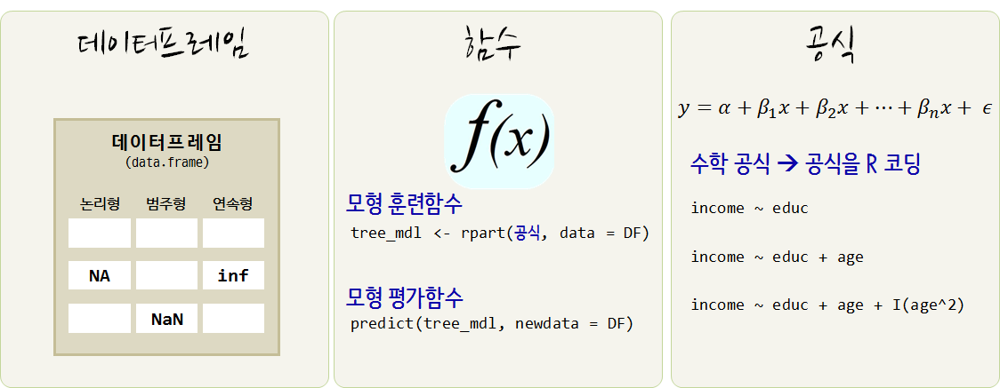
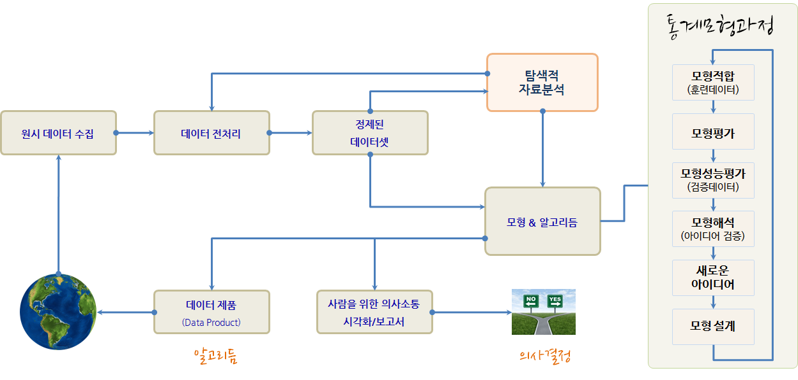
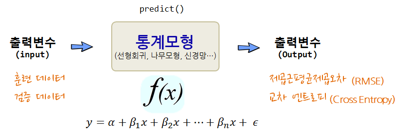
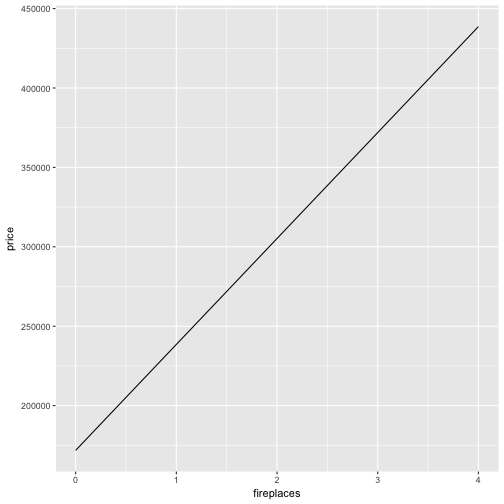
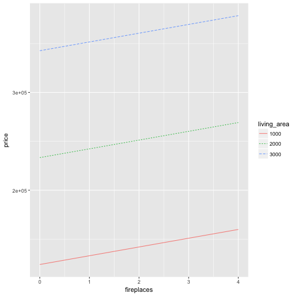
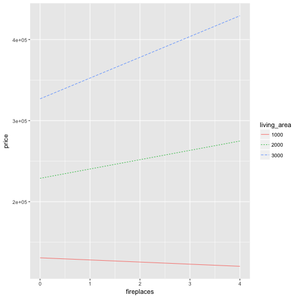
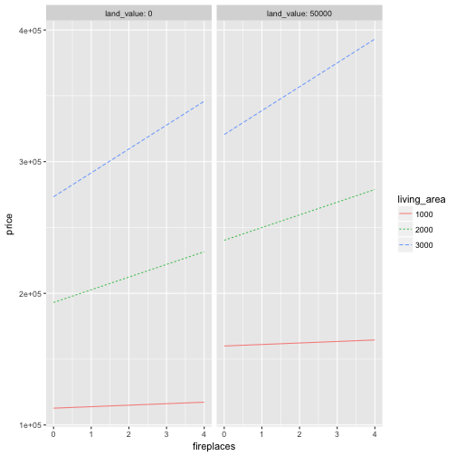
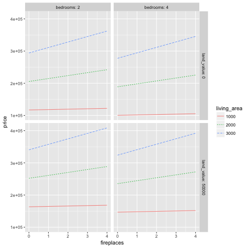

데이터 과학 – 기초 통계
통계 모형(Statistical models)
학습 목표
- 모형, 수학모형, 통계 모형을 이해한다.
1. 통계모형(Statistical Models)
수학적 모형(Mathematical Model)은 숫자, 모형 공식, 등식 등을 활용하여 구성되는 반면에 통계모형은 수학모형의 한가지 형태로 데이터로부터 만들어지며 불확실성, 무작위 확률 개념을 모형에 담을 수 있다. 통계 모형을 활용하는 곳은 다음과 같다.
- 데이터 숨겨진 패턴을 식별한다.
- 사건을 분류한다.
- 영향을 미치는 것이 다양한데 이를 풀어낸다.
- 증거의 강도를 가늠한다.
미래 결과를 예측하거나, 실험을 통해서 변수들 간의 관계를 연구하거나, 데이터를 탐색해서 변수관계를 파악하는데 통계모형을 적용한다.

1.1. 통계모형의 구성요소
모형(Model)은 특정목적을 표현한 것이며, 수학모형은 수학 구성요소를 조합해서 생성되고, 통계모형은 데이터를 기반으로 이를 학습시켜 만들어진다. 통계모형은 세가지 구성요소로 구성된다.
- 데이터 : 데이터프레임으로 깔끔한 데이터(Tidy Data)로 구성이 되어야 되고, 변수와 관측점 그리고 값으로 구성되는데 컴퓨터가 인식할 수 있을 뿐만 아니라 개념적으로도 일관된 체계를 갖춰야 된다.
- 함수: 데이터에서 패턴을 뽑아낼 수 있는 모형 훈련함수(training function)와 모형을 평가할 수 있는 평가함수(evaluation function) 한쌍으로 구성되고, 회귀모형, 나무모형, 신경망, 군집모형, 딥러닝 모형이 여기에 포함된다.
- 공식: 함수가 정해졌다면 변수들간의 관계를 R 공식에 맞춰 표현한다.
교육수준에 따른 가계소득을 예측하는 경우 income ~ educ 공식을 적용할 경우 \(\text{income} = \alpha + \beta \times \text{education}\), \(\text{가계 소득} = \alpha + \beta \times \text{교육 수준}\)이 되고, 가계소득은 교육수준의 함수가 된다, 가계소득은 교육수준으로 설명된다, 가계소득은 교육수준으로 모형화되고, 가계소득을 교육수준으로 설명할 수 있다 등등으로 언급된다.
inc_lm <- lm(income ~ educ, data=income)1.2. 통계모형 구축 흐름
통계모형 개발과정은 데이터 과학 프로세스와 크게 차이나지 않는다. 다만, 일반적인 통계모형을 개발할 경우 다음과 같은 과정을 거치게 되고, 지난한 과정이 될 수도 있다.
- 데이터를 정제하고, 모형에 적합한 데이터(R과 모형 팩키지와 소통이 될 수 있는 데이터형태)가 되도록 준비한다.
- 변수에 대한 분포를 분석하고 기울어짐이 심한 경우 변수변환도 적용한다.
- 변수와 변수간에, 종속변수와 설명변수간에 산점도와 상관계수를 계산한다. 특히 변수간 상관관계가 \(r > 0.9\) 혹은 근처인 경우 변수를 빼거나 다른 방법을 강구한다.
- 동일한 척도로 회귀계수를 추정하고 평가하려는 경우,
scale()함수로 척도로 표준화한다. - 모형을 적합시킨 후에 잔차를 보고, 백색잡음(whitenoise)인지 확인한다. 만약, 잔차에 특정한 패턴이 보이는 경우 패턴을 잡아내는 모형을 새로 개발한다.
plot()함수를 사용해서 이상점이 있는지, 비선형관계를 잘 잡아냈는지 시각적으로 확인한다.- 다양한 모형을 적합시키고
R^2와RMSE, 정확도 등 모형평가 결과가 가장 좋은 것을 선정한다. - 절약성의 원리(principle of parsimony)를 필히 준수하여 가장 간결한 모형이 되도록 노력한다.
- 최종 모형을 선택하고 모형에 대한 해석결과와 더불어 신뢰구간 정보를 넣어 마무리한다.

1.3. 모형 설계(Model Design)
모형 설계 과정은 탐색적 데이터 분석을 통해 충분한 데이터에 대한 이해를 바탕으로 목적에 맞는 모형을 개발해 나간다. 모형설계 과정에서 중요한 의사결정을 하게 되는데 중요 모형 설계 변수에는 다음이 포함된다.
- 적합한 훈련 데이터
- 종속변수와 설명변수 선정: 독립 관심변수와 공변수(Covariate)
- 모형 아키텍쳐
- 선형회귀모형: lm(), glm()
- 반복분할(recursive partitioning): rpart()
- 신경망(neural network): nnet()
- 최근접이웃(k-nn) : knn()
결국 모형을 개발한다는 것은 데이터와 모형 개발자의 선택에 따라 이루어지는 과정의 결과물이 된다.
1.4. 모형평가(Evaluate Model)
훈련데이터를 달리하거나, 모형 아키텍쳐를 달리 선택하거나, 공식을 달리하면 무수히 많은 다양한 모형 출력결과를 얻게 된다. 그 수많은 모형 중에서 어떤 것을 선택할 것인가? 이 문제에 답을 주는 것이 모형평가과정이다. 예측하고자 하는 변수가 연속형이냐 범주형이냐에 따라 차이가 있기는 하지만, 기본적으로 오차가 최소화되는 모형이 가장 좋은 모형이 되지만, 과적합에 대한 문제, 모형의 복잡성에 대한 문제, 컴퓨터 계산 자원 소모에 대한 문제, 연산시간에 대한 다양한 조건이 만족되고 나서 오차가 최소화되는 모형이 적합한 모형으로 평가된다.

2. R로 통계공식 표기하는 방법 3
| 기호 | 의미 |
|---|---|
| + | 해당변수 포함 |
| - | 해당변수 제외 |
| : | 두변수 교호작용 포함 |
| * | 해당변수와 교호작용 포함 |
| |
조건 반영 해당변수 포함 |
| ^ | 모든 변수와 모든 교호작용 포함 |
I |
해당 수식으로 구성된 변수 새로 추가 |
| 1 | 상수항 |
세가지 변수를 공식에 넣어 예측을 하는 경우 교호작용까지 고려하여 공식에 넣게 되면 다음과 같다.
\(y_i = \beta_0 + \beta_1 X_i + \beta_2 Z_i + \beta_3 W_i + \beta_4 X_i \times Z_i + \beta_5 X_i \times W_i + \beta_6 W_i \times Z_i +\epsilon_i\)
formula_notation_1 <- 'Y ~ X + Z + W + X:Z + X:W + Z:W'
formula_notation_2 <- 'Y ~ X * Z * W - X:Z:W'
formula_notation_3 <- 'Y ~ (X + Z + W)^2'
income_lm <- lm(formula_notation_1, data=income_df)
income_lm <- lm(formula_notation_2, data=income_df)
income_lm <- lm(formula_notation_3, data=income_df)3. 집값 예측 사례
처음에 벽난로 숫자(fireplaces)로 집값을 예측하고, 평수(living_area)를 추가하고, 벽난로 숫자와 평수간의 교호작용도 추가하고, 땅값(land_value)도 추가하고, 침실숫자(bedrooms)도 넣어가며 좀더 정밀한 집값 예측모형을 이해하면서 만들어 나간다.
library(statisticalModeling)
data(Houses_for_sale)
house_mod <- lm(price ~ fireplaces, data = Houses_for_sale)
gmodel(house_mod)
house_mod <- lm(price ~ fireplaces + living_area, data = Houses_for_sale)
gmodel(house_mod)
house_mod <- lm(price ~ fireplaces * living_area, data = Houses_for_sale)
gmodel(house_mod)
house_mod <- lm(price ~ fireplaces * living_area + land_value, data = Houses_for_sale)
gmodel(house_mod)
house_mod <- lm(price ~ fireplaces * living_area + land_value + bedrooms, data = Houses_for_sale)
gmodel(house_mod)